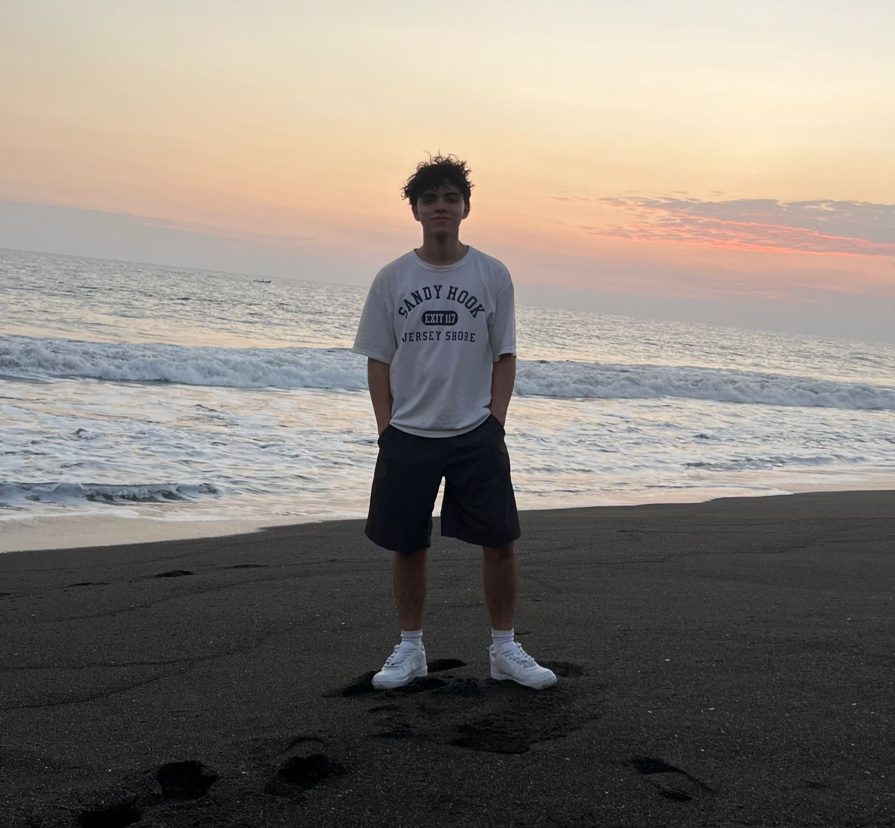

Primeros años
de mi vida

de mi vida
Me llamo Nelson Renato Morales León, nací en la ciudad capital de Guatemala, mi padre se llama Marco Morales y mi madre Rosa León, estudio en varios establecimientos, pero sin duda uno de los cuales me formo fue el instituto "PEMEM" en el cual estudie mis basicos y Bachillerato en Ciencias y Letras con Orientacion en Computacion, actualmente tengo 19 años, mi color favorito es el rojo, mi segundo color favorito es el cafe, claro, dejando de lado el color negro y blanco. Desde que tengo memoria recuerdo ser una persona muy empatica, para mi los valores en una persona es lo principal,
¿Cuáles son mis platillos favoritos?
Pasta Alfredos, Caldo de mariscos, Pizza.